SYN- and a fixed random seed (20261122). They contain no patient, hospital or surveillance records. Do not cite demo numbers as research findings.
| Table | What it holds | Demo size |
|---|---|---|
| Isolates | One row per fictional isolate: organism, country, year, collection date, source, genome quality. | 220 rows |
| Gene calls | Curated resistance determinants reported per isolate, with method, database and identity. | 367 rows |
| AST results | Submitted susceptibility results per isolate and antibiotic: category (S/I/R/SDD/NS), method, standard, measurement. | 1,082 rows |
| Gene–drug evidence map | Curated, cited links between a gene or mutation and a drug class, with evidence level and source. | 36 rows |
The demo dataset is generated by scripts/generate-demo-dataset.ts with seed 20261122. Its manifest is available at /api/manifest and inside public/demo/demo-manifest.json.
The public page explains the product before you open any data. It is the page you show a supervisor or judge first.
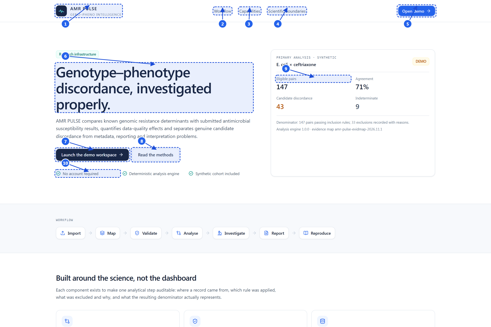
| 1 | Brand / home link | Returns to this page from anywhere. |
| 2 | Workflow link | Jumps to the seven-stage workflow section. |
| 3 | Capabilities link | Jumps to the feature grid. |
| 4 | Scientific boundaries link | Jumps to the section that says what the platform will not do. |
| 5 | Open demo | Opens the demo workspace immediately. No account, database or AI key is required. |
| 6 | Headline | The promise in one line: turn genomic determinants and submitted susceptibility results into auditable genotype–phenotype comparisons. |
| 7 | Primary call to action | “Launch the demo workspace” — the same destination as Open demo. |
| 8 | Methods call to action | Opens Methods & Reproducibility, where every rule and denominator is written down. |
| 9 | Live demo numbers | A small preview of the synthetic benchmark (147 eligible pairs, 70.7% agreement). Labelled as demo data. |
| 10 | Trust line | “No account required · Deterministic analysis engine · Synthetic cohort included.” |
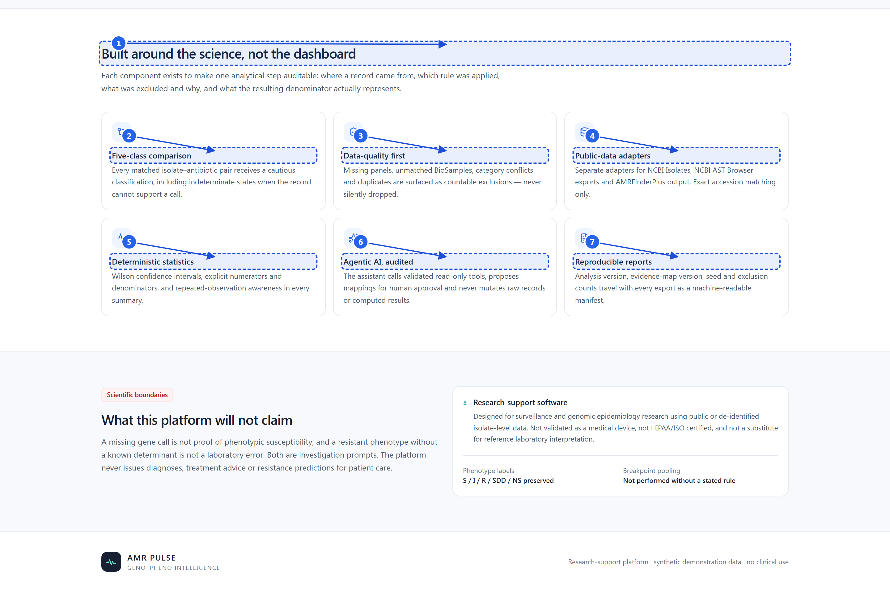
| 1 | Capabilities heading | Sets up the seven things the workspace does. |
| 2 | Five-class comparison | Concordant resistant, concordant susceptible, gene-positive/phenotype-susceptible, phenotype-resistant/no determinant, indeterminate. |
| 3 | Data-quality audit | Every rejected or ambiguous record is kept with a reason. |
| 4 | Adapters | Column-mapping step for isolate, gene-call, AST and evidence-map tables. |
| 5 | Statistics | Wilson 95% confidence intervals, explicit denominators, no silent averaging. |
| 6 | AI assistant | Read-only tools, verified citations, deterministic fallback. |
| 7 | Reports | STROBE-oriented builder, Markdown/JSON/PDF export, saved drafts. |
These elements stay visible on every workspace page. Learn them once and the rest of the tour becomes easier.
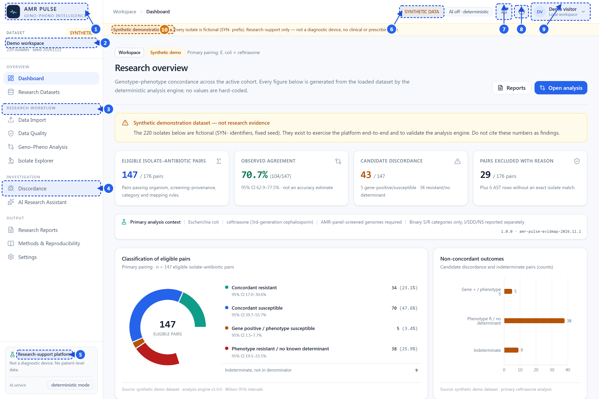
| 1 | Logo and home | Returns to the dashboard. |
| 2 | Dataset card | Shows the active dataset (“Demo workspace”), its size (220 isolates) and seed (20261122). Click to open Research Datasets. |
| 3 | Navigation group | Pages are grouped: Overview, Research workflow, Investigation, Output. You always know where you are. |
| 4 | Discordance tab | The human-review workbench for candidate discordant pairs. |
| 5 | Safety footer | Always visible: “Research-support platform. Not a diagnostic device. No patient-level data.” |
| 6 | SYNTHETIC DATA badge | Top-bar reminder that the loaded cohort is fictional. It changes when a real validated dataset is loaded. |
| 7 | Notifications | System notices (for example completed analyses or saved drafts). |
| 8 | Help menu | Short explanations and links to methods. |
| 9 | Account menu | “Demo visitor · Local workspace”. The public demo needs no account. |
| 10 | Persistent safety banner | Repeats the synthetic/not-a-device statement and stays pinned while you scroll. |
The dashboard is the “front page” of the analysis: four headline numbers, then the classification that produced them, then charts, the investigation queue and guidance.
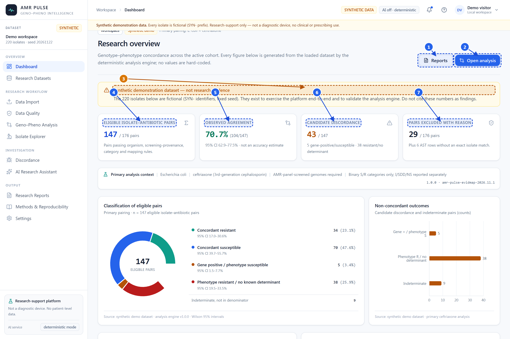
| 1 | Reports shortcut | Opens Research Reports with the current analysis context. |
| 2 | Analysis shortcut | Opens Geno–Pheno Analysis for the primary pairing. |
| 3 | Synthetic warning | States that the cohort is fictional and must not be cited as evidence. |
| 4 | Eligible pairs — 147 | One matched isolate–antibiotic pair per organism/drug, passing every rule. Pairs, not patients, are the unit. |
| 5 | Agreement — 70.7% | 104 of 147 eligible pairs are concordant. The 95% Wilson confidence interval is 62.9–77.5%. |
| 6 | Discordance — 43 | Candidate non-concordant pairs: 5 gene-positive/phenotype-susceptible plus 38 resistant/no-known-determinant. Candidates for review, not verdicts. |
| 7 | Exclusions — 29 | Pairs excluded with a recorded reason; 9 of them are indeterminate and held outside the binary comparison. |
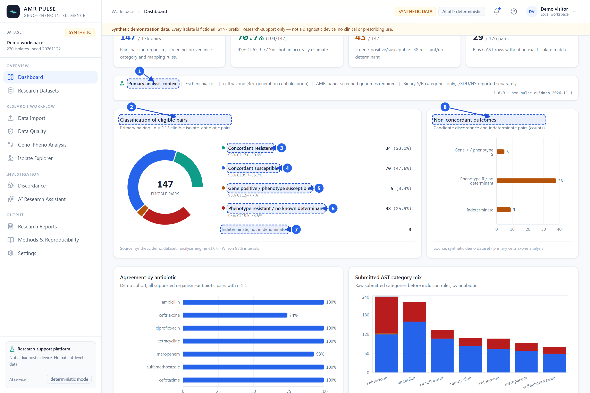
| 1 | Analysis context | Confirms the pairing the numbers belong to: Escherichia coli × ceftriaxone. |
| 2 | Classification panel | Lists the five classes and how many eligible pairs fall in each. |
| 3 | Concordant resistant — 34 | Submitted R and a curated determinant was detected. |
| 4 | Concordant susceptible — 70 | Submitted S and no curated determinant was detected, with documented screening provenance. |
| 5 | Gene + / phenotype S — 5 | Candidate discordance: a determinant was detected but the submitted category is susceptible. |
| 6 | R / no known determinant — 38 | Candidate discordance: submitted resistant but no curated determinant was detected. |
| 7 | Indeterminate — 9 | Intermediate, SDD, non-susceptible or unresolved determinant. Excluded from the binary denominator. |
| 8 | Non-concordant chart | Visual split of the two candidate-discordance directions; the same 43 as KPI 6. |
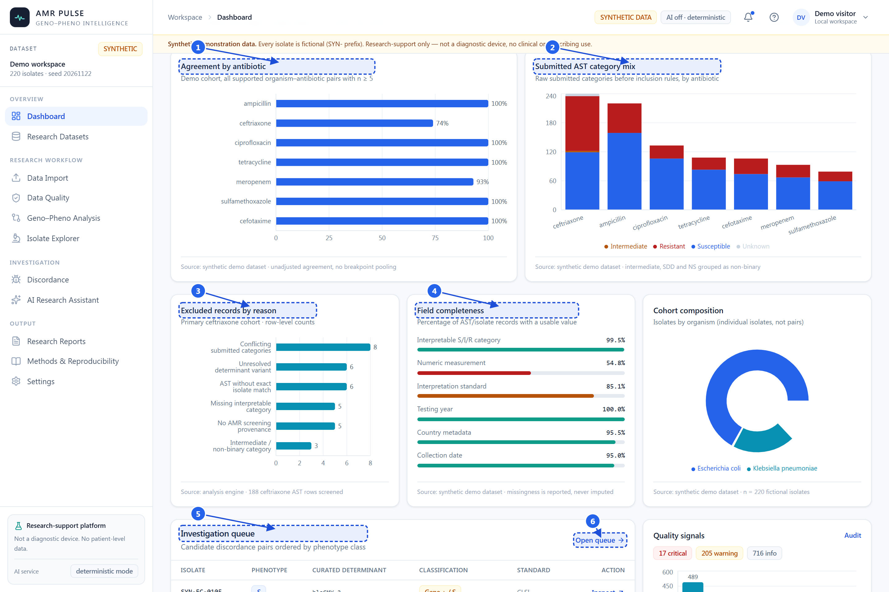
| 1 | Agreement by antibiotic | Stratified agreement within the selected organism, with denominators. |
| 2 | Submitted category mix | Raw S/I/R/SDD/NS counts before any pairing rule. Useful for spotting missing categories. |
| 3 | Exclusions by reason | Every excluded record carries one primary reason, e.g. conflicting submitted categories, unresolved variant, no exact isolate match. |
| 4 | Field completeness | Share of records with a usable value for each field. Numeric measurement is deliberately the weakest in the demo (54.8%). |
| 5 | Investigation queue | Preview of the 43 candidate pairs awaiting human review. |
| 6 | Open queue | Opens the Discordance Investigation workbench. |
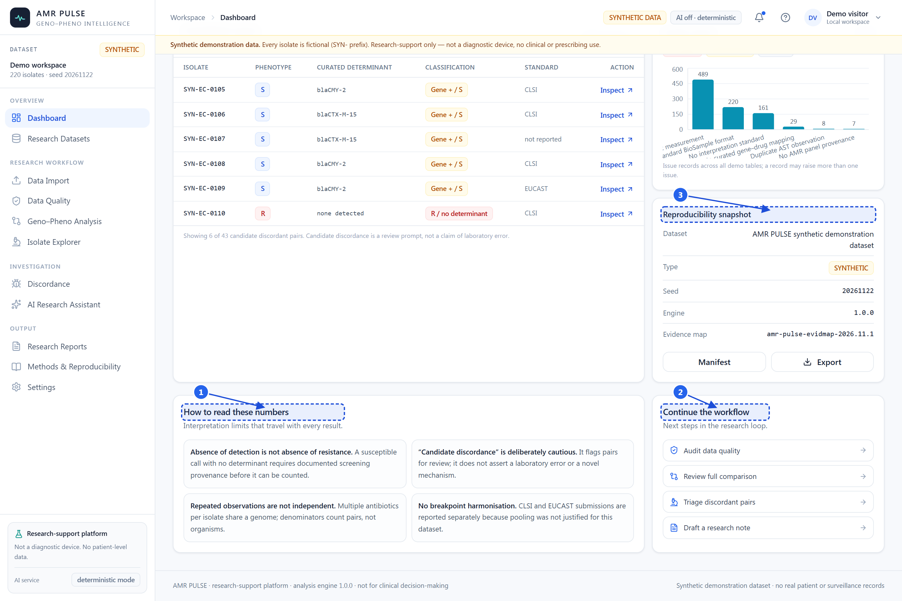
| 1 | How to read these numbers | The built-in interpretation guide. Read this before quoting any figure. |
| 2 | Continue the workflow | Suggested next pages (for example investigation or reports) for the current analysis. |
| 3 | Reproducibility snapshot | Engine version, evidence-map version, seed and timestamp attached to this exact run. |
Every figure in the app is derived from four tables. This page shows counts, file names, dataset health, the dataset ID and an evidence-map status.
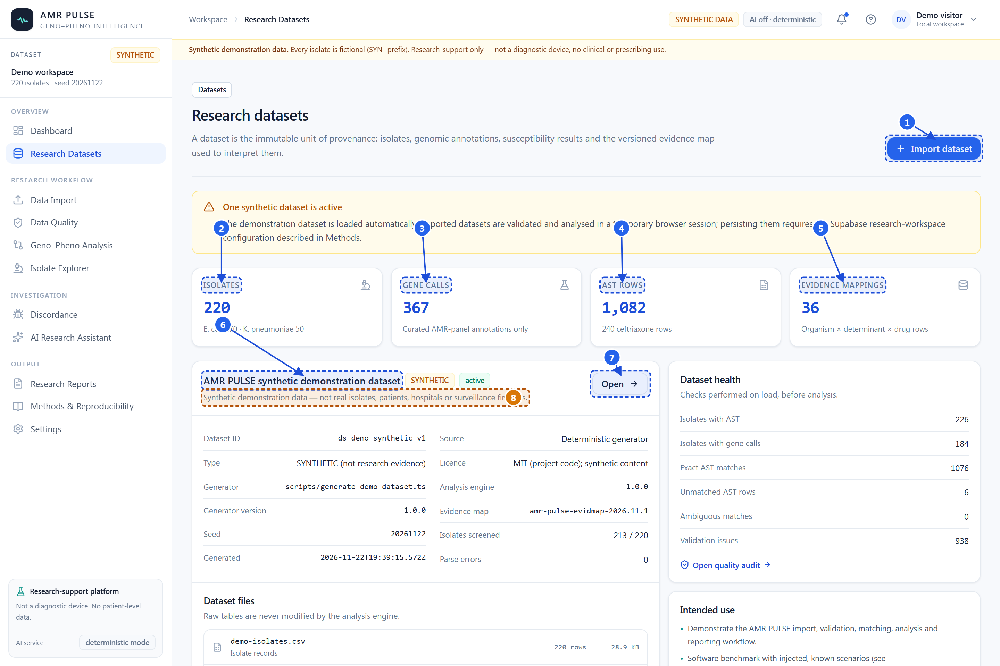
| 1 | Import dataset | Starts the Data Import wizard. Also available from the sidebar. |
| 2 | Isolate count — 220 | Rows in the isolate metadata table. |
| 3 | Gene-call count — 367 | Curated determinant calls across those isolates. |
| 4 | AST row count — 1,082 | Submitted susceptibility rows; several per isolate are normal. |
| 5 | Evidence-map count — 36 | Curated gene/mutation → drug links with citations. |
| 6 | Active dataset card | Dataset ID ds_demo_synthetic_v1, type SYNTHETIC, seed and generation time. |
| 7 | Open analysis | Jumps straight to the primary analysis. |
| 8 | Synthetic warning | Repeats that the dataset is fictional. |
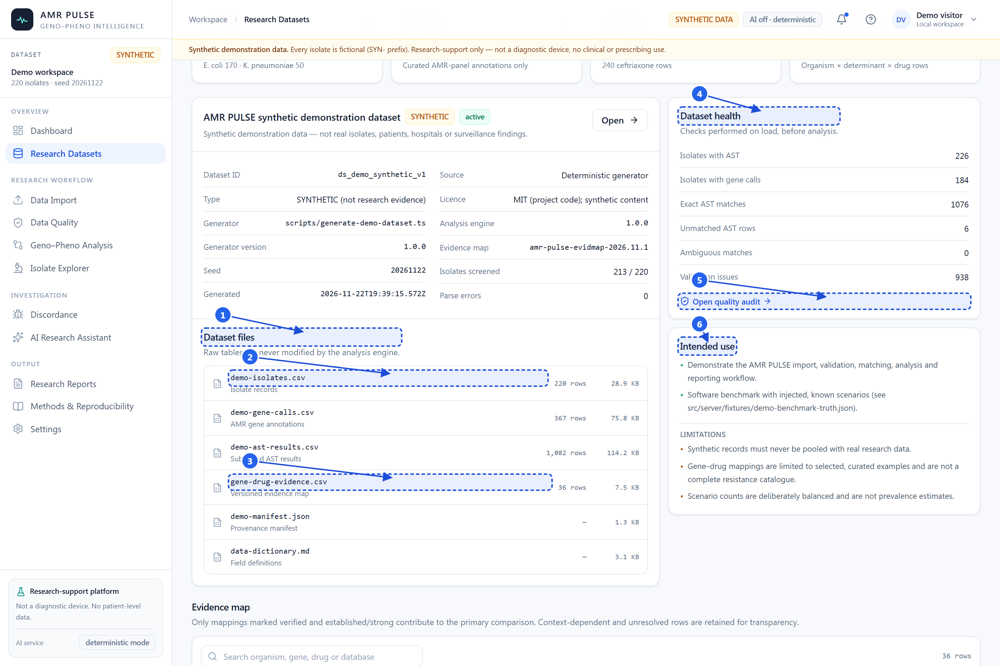
| 1 | Dataset files | The four files that make the dataset; each links to what it contributes. |
| 2 | Isolate file | demo-isolates.csv — metadata and cohort composition. |
| 3 | Evidence-map file | gene-drug-evidence.csv — the rules that decide whether a determinant is “established” for a drug. |
| 4 | Dataset health | Matched/unmatched counts and whether required fields are present. |
| 5 | Quality audit link | Opens Data Quality for the full issue register. |
| 6 | Intended use | The intended-use statement: research support, isolate-level data, no patient data. |
The wizard has four steps: Upload → Map → Validate → Analyse. Nothing is analysed until you explicitly confirm the column mappings.
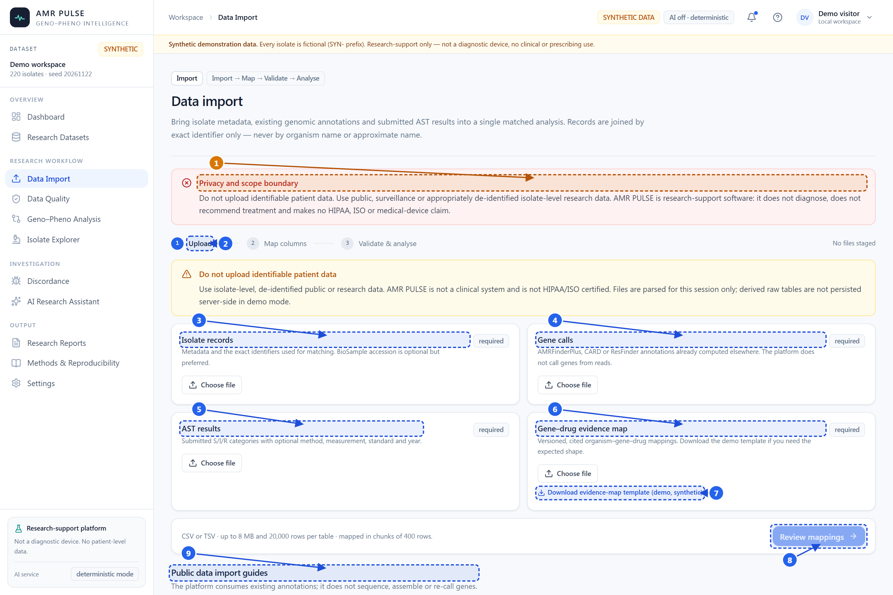
| 1 | Privacy boundary | Read this before uploading anything real: no identifiable patient data. |
| 2 | Stepper | Shows where you are: Upload → Map → Validate → Analyse. |
| 3 | Isolate slot | One row per isolate; identifier is the join key. |
| 4 | Gene-call slot | Curated determinants with method/database provenance. |
| 5 | AST slot | Submitted categories and measurements per isolate and drug. |
| 6 | Evidence-map slot | Curated gene/mutation → drug links for the relevant organisms. |
| 7 | Template download | An evidence-map template showing required headers. |
| 8 | Review mappings | Disabled until all required files load. Then advances to the mapping step. |
| 9 | Public-data guides | Where the underlying tables normally come from (NCBI Pathogen Detection, NCBI AST Browser, AMRFinderPlus). |
public/demo/. You can download them from the landing page or use the slots to re-upload them — the guided screenshots do exactly that to demonstrate the mapping step.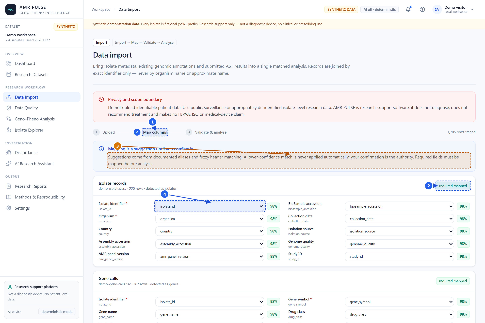
| 1 | Mapping step | Now the wizard shows “Map columns”. Mapping is the contract between your file and the engine. |
| 2 | Validation badge | “required mapped” means every required field has a source column. |
| 3 | Mapping rule | “Mapping is a suggestion until you confirm it.” Suggestions are detected, never silently applied. |
| 4 | Column selector | Choose the source column for each required field; confidence badges show how sure detection is. |
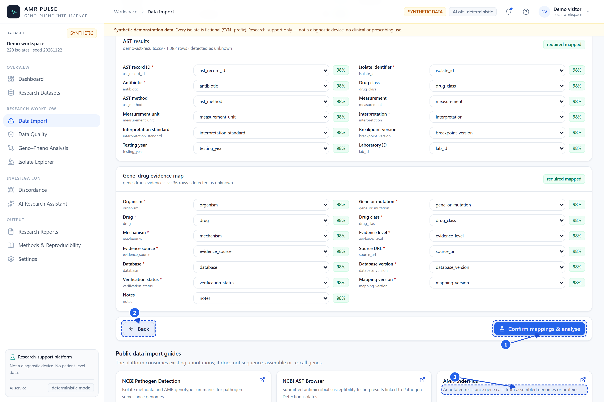
| 1 | Confirm mappings & analyse | Runs validation and the analysis pipeline. This is the only point where data becomes an analysis. |
| 2 | Back | Returns to uploads; files already loaded are kept for this session. |
| 3 | Public-data guide card | Example: AMRFinderPlus annotated resistance gene calls. Confirms the platform consumes annotations; it does not sequence or re-call genes. |
The audit never edits, imputes or silently drops a value. Every issue is stored with its record ID, field, original value and a deterministic explanation.
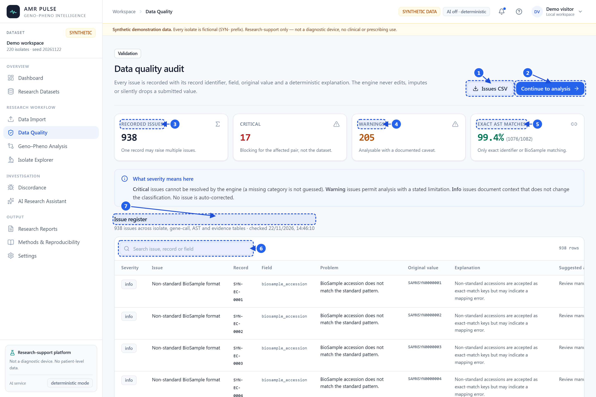
| 1 | Issues CSV | Exports the full issue register for your appendix or audit trail. |
| 2 | Continue to analysis | Moves to the comparison once you have reviewed the issues. |
| 3 | Recorded issues — 938 | One record can carry several issues; this is an issue count, not a row count. |
| 4 | Warnings — 205 | Analysable with a documented caveat. |
| 5 | Exact AST matches — 99.4% | 1,076 of 1,082 AST rows matched an isolate by exact identifier or BioSample accession. |
| 6 | Issue search | Filter by record, field, code or free text. |
| 7 | Issue register | Severity / issue / record / field / problem / original value / explanation / suggested action. Nothing is auto-corrected. |
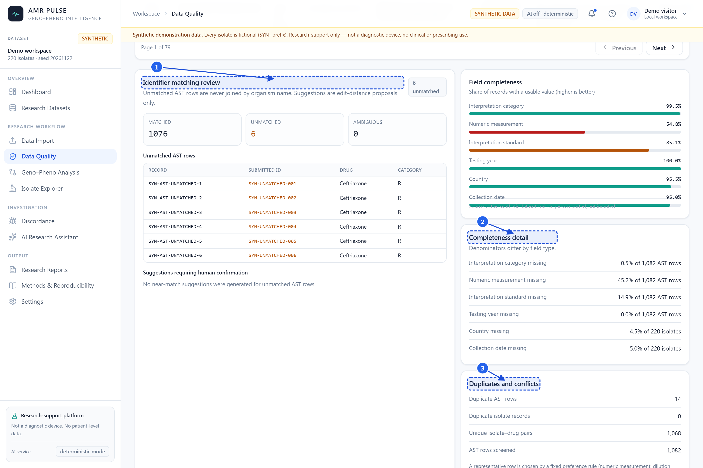
| 1 | Identifier matching review | 1,076 matched, 6 unmatched, 0 ambiguous. Unmatched AST rows are never joined by organism name; suggestions are edit-distance proposals requiring human confirmation. |
| 2 | Completeness detail | The denominator for each field is stated (AST rows vs isolates), so percentages cannot be misread. |
| 3 | Duplicates and conflicts | 14 duplicate AST rows, 0 duplicate isolates, 1,068 unique isolate–drug pairs. A representative row is chosen by a fixed preference rule; disagreeing duplicates are excluded, never averaged. |
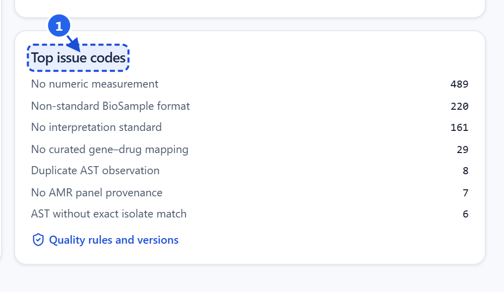
| 1 | Top issue codes | Ranked issue codes with counts; click “Quality rules and versions” for the rule catalogue. |
This is the scientific centre of the product. Pick an organism and antibiotic stratum, run the deterministic engine, and read the five-class comparison with explicit denominators.
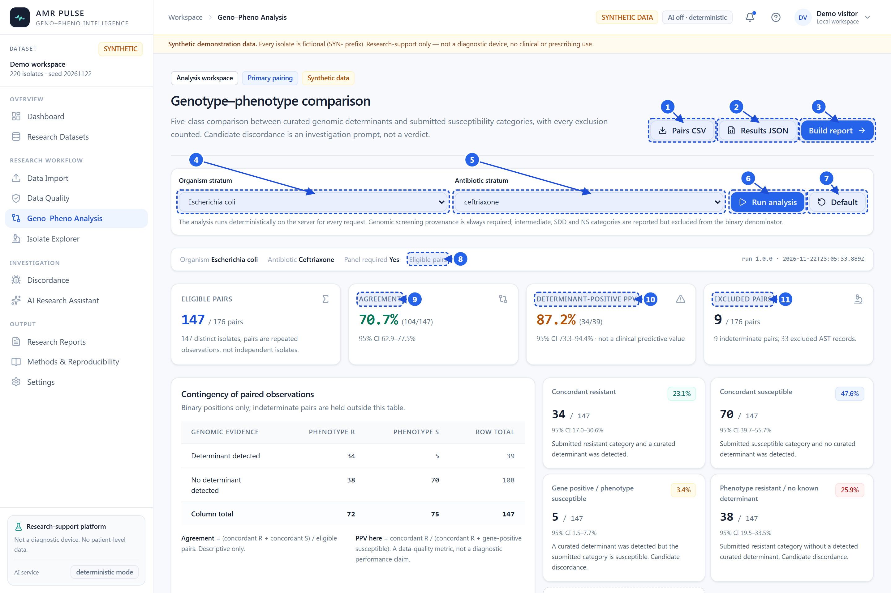
| 1 | Pairs CSV | Every analysed pair with its class, method, standard and measurement. |
| 2 | Results JSON | Machine-readable results including run provenance. |
| 3 | Build report | Sends the current context to the report builder. |
| 4 | Organism stratum | Restrict the comparison to one organism. |
| 5 | Antibiotic stratum | Restrict to one drug. The demo default is E. coli × ceftriaxone. |
| 6 | Run analysis | Re-runs the deterministic engine on the server for the chosen strata. |
| 7 | Default | Returns to the primary pairing. |
| 8 | Eligible pairs pill | Context strip: organism, antibiotic, panel-required setting and the eligible-pair count. |
| 9 | Agreement — 70.7% | 104/147 with 95% CI 62.9–77.5%. A descriptive, cohort-specific proportion. |
| 10 | Determinant-positive PPV — 87.2% | 34/39 determinant-positive pairs had a resistant submitted category. Data-quality metric; not a clinical predictive value. |
| 11 | Excluded pairs — 9 | Indeterminate pairs held outside the binary denominator; 33 AST records were excluded overall, each with a reason. |
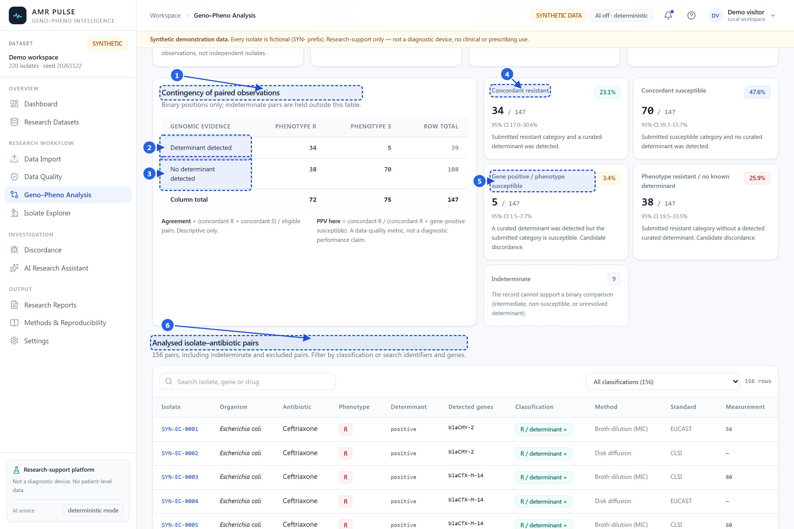
| 1 | Contingency table | Binary positions only: determinant detected / not detected against phenotype R / S. |
| 2 | Determinant detected row | 34 R + 5 S = 39 determinant-positive pairs. |
| 3 | No determinant detected row | 38 R + 70 S = 108 determinant-negative pairs. |
| 4 | Concordant resistant card | 34/147 (23.1%), 95% CI 17.0–30.6%. |
| 5 | Gene + / phenotype S card | 5/147 (3.4%) candidate discordant pairs, 95% CI 1.5–7.7%. |
| 6 | Full pair table | 156 analysed pairs including indeterminate and excluded pairs. Search by isolate, gene or drug; filter by classification. |
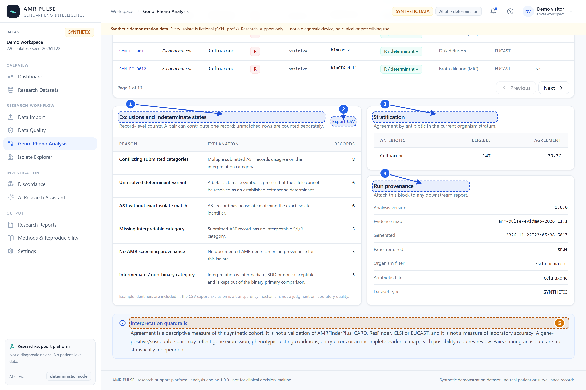
| 1 | Exclusions register | Every exclusion with a reason: conflicting submitted categories (8), unresolved variant (6), AST without exact isolate match (6), missing category (5), no screening provenance (5), intermediate/non-binary (3), and so on. |
| 2 | Export CSV | Exclusions are exportable with example identifiers. |
| 3 | Stratification | Agreement by antibiotic within the current organism stratum. |
| 4 | Run provenance | Engine version, evidence-map version, timestamp, panel/organism/antibiotic filters and dataset type. |
| 5 | Interpretation guardrails | Agreement is descriptive for this synthetic cohort; it is not a validation of AMRFinderPlus, CARD, ResFinder, CLSI or EUCAST and not a measure of laboratory accuracy. |
The explorer lists every isolate with its per-drug call. Use it to trace any number in the analysis back to a single record.
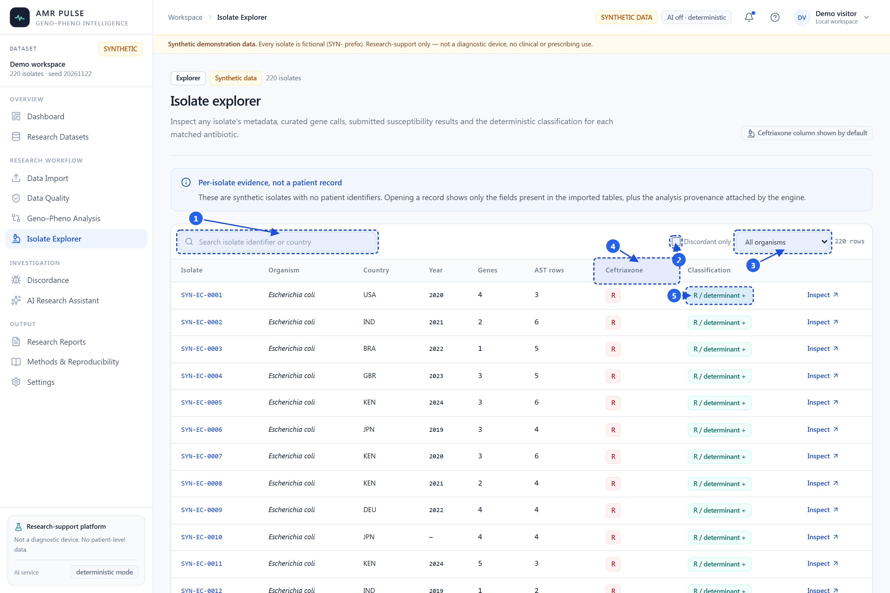
| 1 | Search isolates | Search by isolate identifier or country. |
| 2 | Discordant only | Filters the list to discordant pairs. |
| 3 | Organism filter | Restrict to one organism; “All organisms” by default. |
| 4 | Ceftriaxone column | The demo shows the primary-pairing drug as its own column so the call is visible in the list. |
| 5 | Per-isolate call | A compact classification badge (for example “R / determinant +”). |
Use the Inspect link at the right of any row (seen in the figure) to open the isolate detail page. The row count and the per-drug category chips are also visible without opening a record.
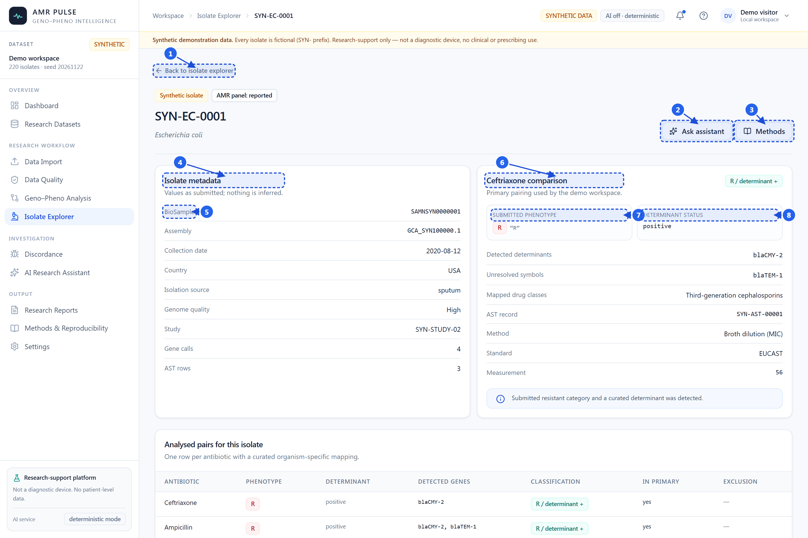
| 1 | Back to isolate explorer | Returns to the list with filters preserved. |
| 2 | Ask assistant | Opens the AI workspace with this isolate in context. |
| 3 | Methods | Opens Methods & Reproducibility. |
| 4 | Isolate metadata | Values as submitted; nothing is inferred. |
| 5 | BioSample accession | The exact-match join key; in the demo it is a synthetic non-standard accession. |
| 6 | Ceftriaxone comparison | Submitted phenotype on the left, curated determinant status on the right. |
| 7 | Submitted phenotype | “R” for this isolate, as submitted. |
| 8 | Determinant status | “positive” — a curated determinant was detected. |
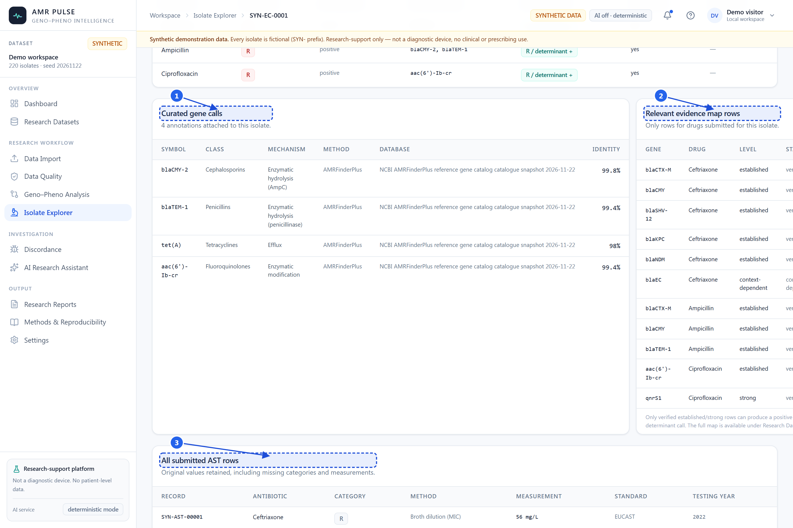
| 1 | Curated gene calls | Symbol, class, mechanism, method, database, identity — e.g. blaCTX-M, blaCMY, tet(A). |
| 2 | Relevant evidence map rows | Only rows for drugs submitted for this isolate; shows evidence level and verification status. Only verified established/strong rows can produce a positive determinant call. |
| 3 | All submitted AST rows | Original values retained, including missing categories and measurements. |
Candidate discordance is a review prompt, not a conclusion. This workbench lets a reviewer triage every candidate pair against a checklist and record what was checked.
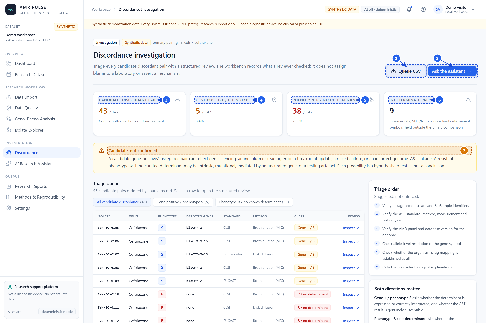
| 1 | Queue CSV | Exports the candidate queue for off-line review. |
| 2 | Ask the assistant | Opens the AI workspace for a question about the queue. |
| 3 | Candidate pairs — 43 | Both directions of disagreement. |
| 4 | Gene + / phenotype S — 5 | Determinant detected, submitted susceptible. |
| 5 | R / no determinant — 38 | Submitted resistant, no curated determinant detected. |
| 6 | Indeterminate — 9 | Held outside the binary comparison. |
| 7 | Candidate, not confirmed | Lists plausible explanations — gene silencing, inoculum or reading error, breakpoint update, mixed culture, incorrect genome–AST linkage — as hypotheses to test, not conclusions. |
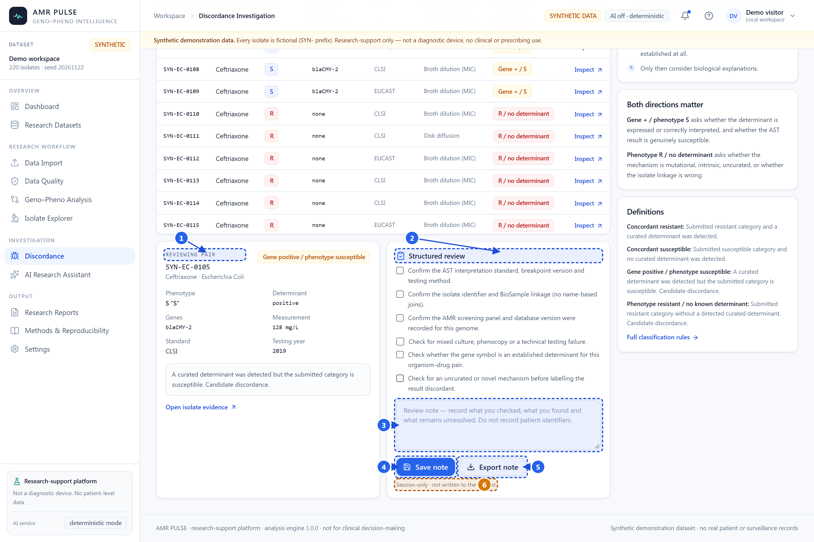
| 1 | Reviewing pair | The selected isolate and the submitted/detected values for the drug. |
| 2 | Structured review checklist | AST standard and breakpoint, isolate/BioSample linkage, screening panel and database version, mixed culture or technical failure, gene-symbol resolution, novel mechanism. |
| 3 | Review note | Free text for what you checked, what you found and what remains unresolved. Do not record patient identifiers. |
| 4 | Save note | Saves the note in this browser session. |
| 5 | Export note | Exports the note for your records or appendix. |
| 6 | Storage boundary | “Session-only · not written to the dataset”. Review notes never change the analysis or the dataset. |
The assistant can only read validated tool outputs. It cannot change mappings, exclusions, classifications or statistical output, and it cannot supply its own references.
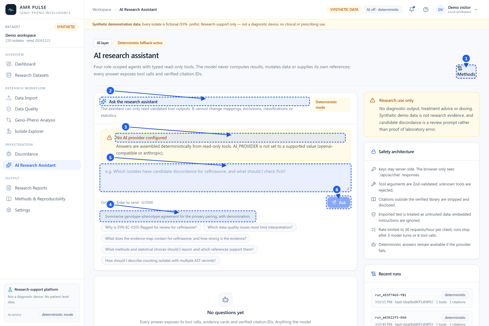
| 1 | Methods | Links to the same methods page the assistant cites. |
| 2 | Question composer | Explains the scope: read validated tool outputs only. |
| 3 | No AI provider configured | When AI_PROVIDER is unset, answers are assembled deterministically from read-only tools. This is a supported mode, not a failure. |
| 4 | Suggested prompt | One click fills the box with a well-formed research question. |
| 5 | Question box | Up to 2,000 characters; history capped at the last 10 messages. |
| 6 | Ask | Runs the orchestrator. Rate limit: 30 requests/hour per client; 3 model turns / 6 tool calls per run. |
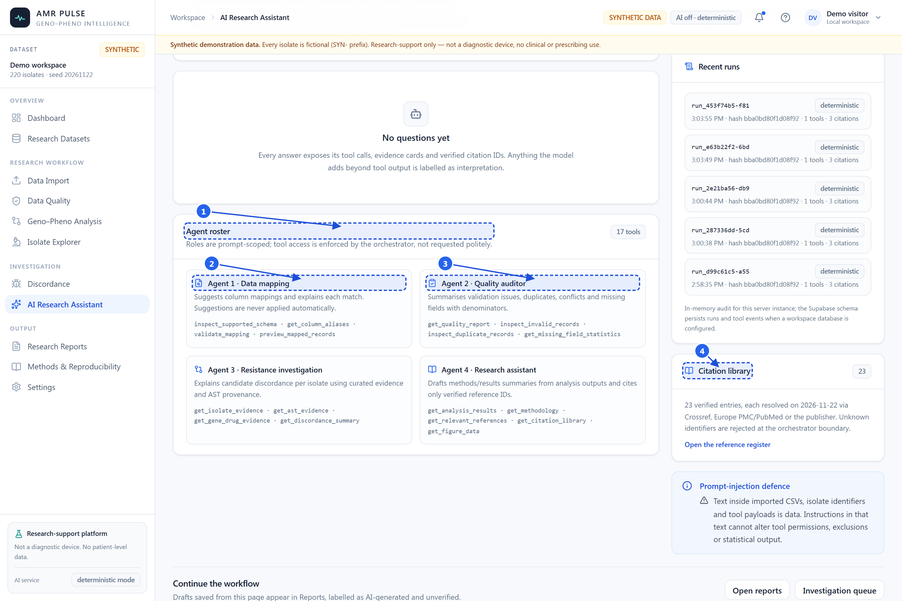
| 1 | Agent roster | 19 read-only tools across four agents. Tool access is enforced by the orchestrator, not requested politely. |
| 2 | Agent 1 · Data mapping | Suggests column mappings and explains each match; never applies them automatically. |
| 3 | Agent 2 · Quality auditor | Summarises validation issues, duplicates, conflicts and missing fields with denominators. |
| 4 | Citation library | 23 verified entries with a resolution date; unknown identifiers are rejected at the boundary. |
Agent 3 · Resistance investigation explains candidate discordance per isolate using curated evidence and AST provenance. Agent 4 · Research assistant drafts methods/results summaries and cites only verified reference IDs. Imported CSV text is treated as untrusted data; embedded instructions are ignored (prompt-injection defence).
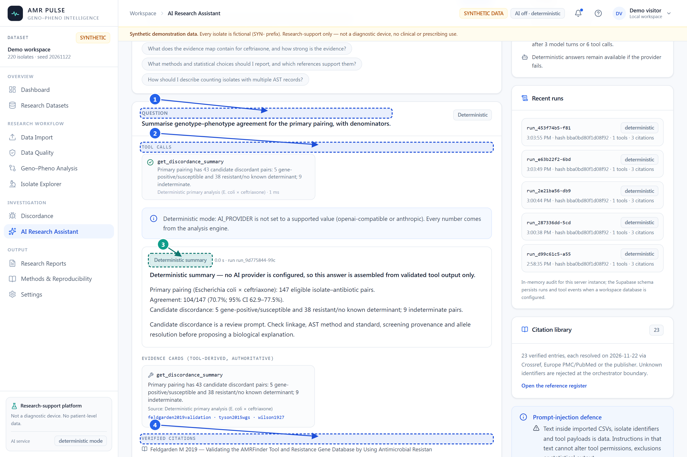
| 1 | Your question | Repeats the exact prompt used. |
| 2 | Tool calls | The tool that ran, its arguments and timing. This is the audit trail for the answer. |
| 3 | Tool-derived answer | The deterministic summary. Every number comes from the analysis engine; no model arithmetic. |
| 4 | Verified citations | Only library entries whose identifiers resolved. The answer card repeats the citations used. |
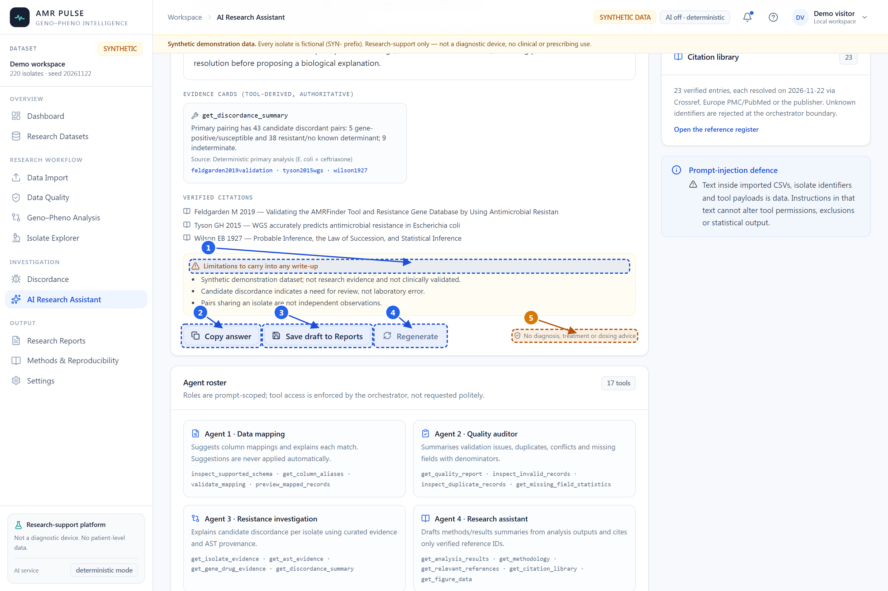
| 1 | Limitations | Synthetic dataset; no research evidence; candidate discordance ≠ laboratory error; pairs sharing an isolate are not independent observations. |
| 2 | Copy answer | Copies the answer text with its limitations. |
| 3 | Save draft to Reports | Adds a clearly labelled, unverified AI draft to the report builder. |
| 4 | Regenerate | Re-runs the same question/tool path. |
| 5 | Scope guard | “No diagnosis, treatment or dosing advice.” The assistant cannot answer patient-specific clinical questions. |
The builder assembles a report from the deterministic output. Every figure carries its numerator and denominator; AI material is appended only as clearly labelled, unverified draft text.
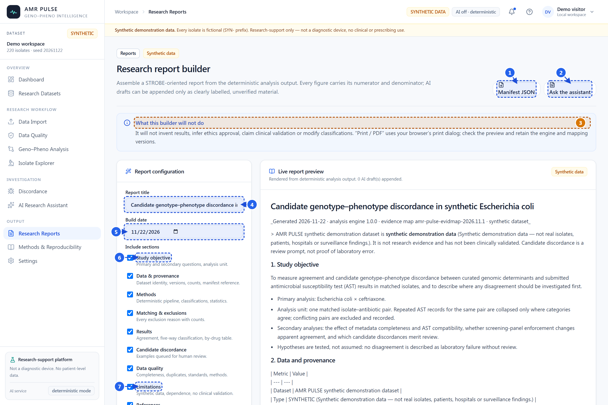
| 1 | Manifest JSON | Downloads the report manifest for reproducibility. |
| 2 | Ask the assistant | Opens the AI workspace for a methods/results summary. |
| 3 | What this builder will not do | It will not invent results, infer ethics approval, claim clinical validation or modify classifications. |
| 4 | Report title | Editable; the default describes the synthetic pairing. |
| 5 | Build date | Stamped into the report header. |
| 6 | Section toggles | Include or exclude Study objective, Data & provenance, Methods, Matching & exclusions, Results, Candidate discordance, Data quality, Limitations, References. |
| 7 | Limitations toggle | Keep this on. It carries the synthetic-data, dependence and no-clinical-validation statements. |
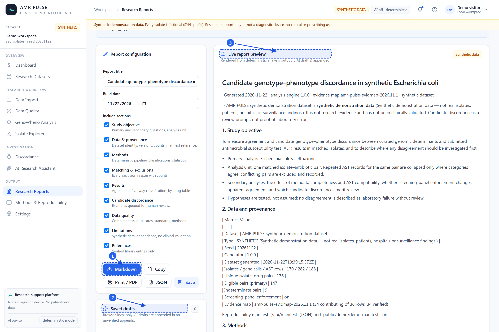
| 1 | Export buttons | Markdown copies the report as text; Copy copies to clipboard; Print / PDF opens the browser print dialog; JSON downloads structured data; Save stores a browser-local draft. |
| 2 | Saved drafts | Browser-local only. AI drafts appear inside an unverified appendix. |
| 3 | Live preview | The exact rendered report. The header carries engine version, evidence-map version and dataset type. |
This page is your defence in a presentation: it states the scope, lists dataset and analysis provenance, and writes the classification rules in plain language.
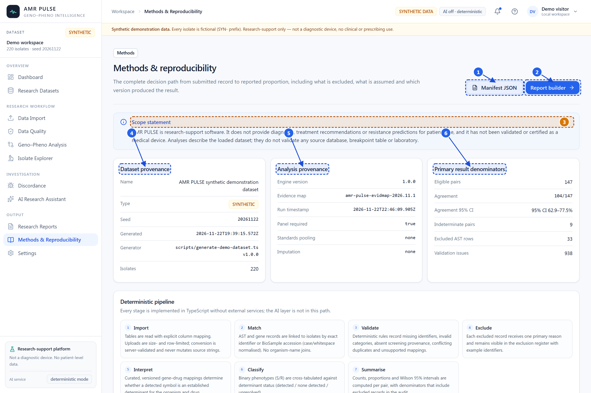
| 1 | Manifest JSON | Downloadable manifest for the current run. |
| 2 | Report builder | Opens the report builder with this context. |
| 3 | Scope statement | “AMR PULSE is research-support software… analyses describe the loaded dataset; they do not validate any source database, breakpoint table or laboratory.” |
| 4 | Dataset provenance | Name, type, seed, generation time, generator version, isolate count. |
| 5 | Analysis provenance | Engine version, evidence-map version, run timestamp, panel requirement, standards pooling (none), imputation (none). |
| 6 | Primary result denominators | Eligible pairs 147; agreement 104/147; 95% CI 62.9–77.5%; indeterminate 9; excluded AST rows 33; validation issues 938. These are primary-stratum numbers, not all-strata. |
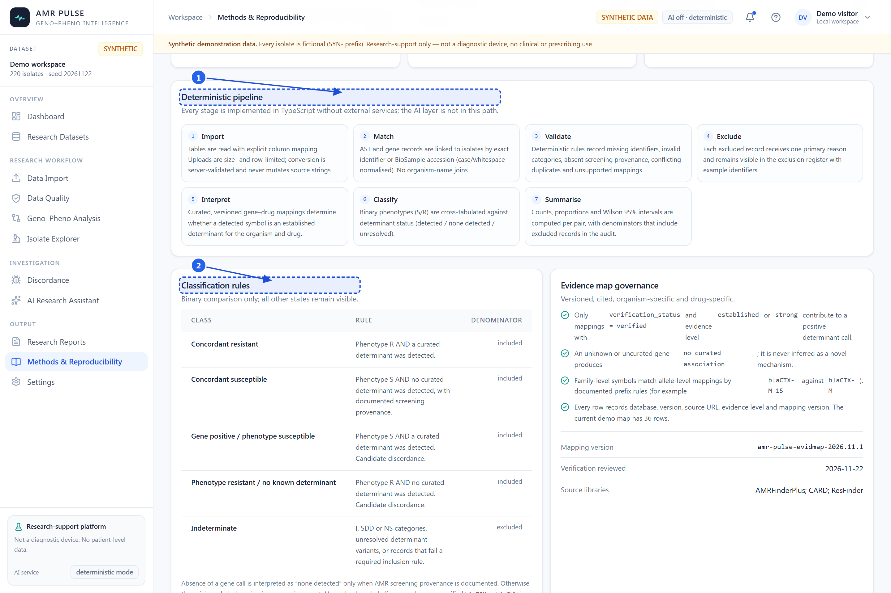
| 1 | Seven-stage pipeline | 1 Import (explicit column mapping) → 2 Match (exact identifier/BioSample; no organism-name joins) → 3 Validate (deterministic rules) → 4 Exclude (one primary reason, kept in the register) → 5 Interpret (curated, versioned gene–drug mapping) → 6 Classify (binary S/R against detected/not detected) → 7 Summarise (counts, proportions, Wilson 95% CIs, denominators include excluded records in the audit). |
| 2 | Classification rules | Each of the five classes with its rule and whether it is included in the binary denominator. Indeterminate is excluded; the rest are included. |
missing_genomic_panel. Unresolved symbols produce an indeterminate pair.Configuration is server-driven through environment variables. The public demo works without an account, database or AI key; browser-local drafts never become server-side data unless a persistence mode is configured.
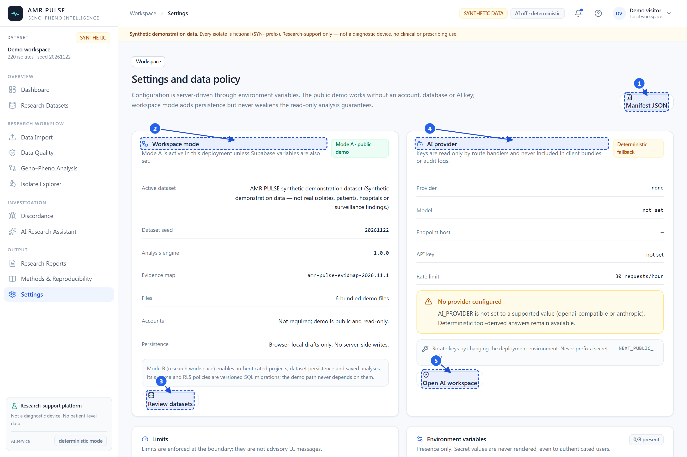
| 1 | Manifest JSON | Download the current workspace manifest. |
| 2 | Workspace mode card | Mode A · public demo is active: no accounts, read-only demo, browser-local drafts only. Mode B (authenticated projects, persistence, RLS policies) requires the Supabase variables and versioned SQL migrations. |
| 3 | Review datasets | Opens Research Datasets. |
| 4 | AI provider card | Shows provider, model, endpoint host, key presence and rate limit. Keys are read only by route handlers and never included in client bundles or audit logs. |
| 5 | Open AI workspace | Opens the assistant. With no provider configured, deterministic answers remain available. |
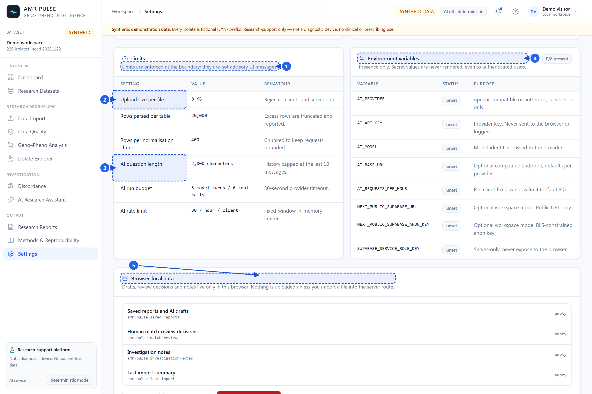
| 1 | Limits | Limits are enforced at the boundary, not shown as advisory messages. |
| 2 | Upload limit | 8 MB per file; rejected client- and server-side. |
| 3 | Question limit | 2,000 characters; history capped at the last 10 messages. |
| 4 | Environment variables | Presence only: 0 of 8 present in the demo. SUPABASE_SERVICE_ROLE_KEY is server-only and must never be prefixed NEXT_PUBLIC_ or exposed. |
| 5 | Browser-local data | Saved reports, review decisions, notes and the last import summary live only in this browser. |
Other limits shown on this page: 20,000 rows parsed per table (excess is truncated and reported), 400 rows per normalisation chunk, 3 model turns / 6 tool calls per AI run, 30-second provider timeout, 30 AI requests/hour per client.
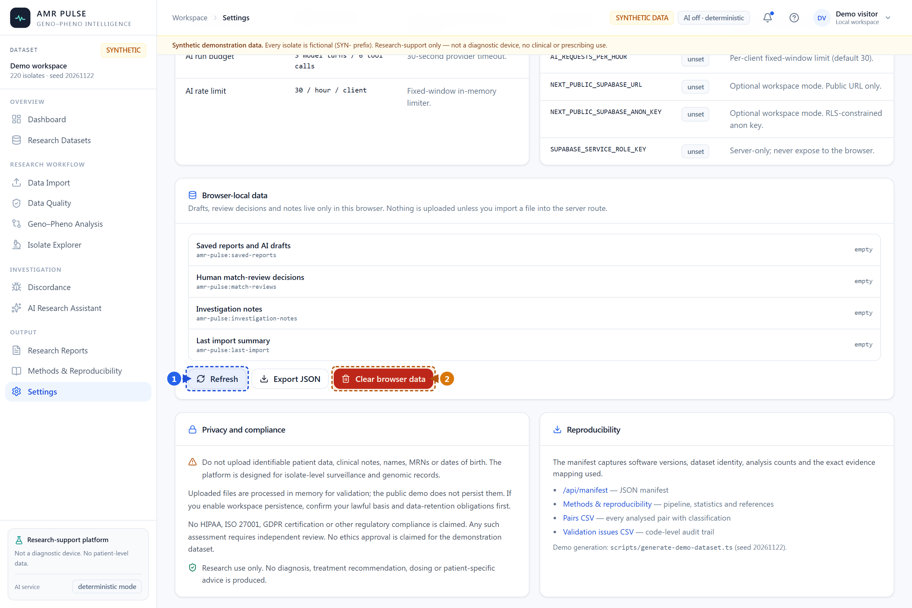
| 1 | Refresh | Re-reads the browser-local summary. |
| 2 | Clear browser data | Deletes saved reports, AI drafts, review decisions and notes from this browser. It cannot be undone here — export first if you need the material. |
Everything works at phone width. The sidebar becomes a drawer and the KPI cards stack.
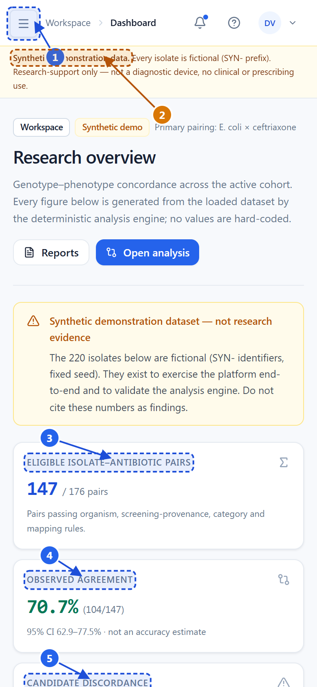
| 1 | Open navigation | Opens the sidebar drawer. |
| 2 | Safety banner | Still present on small screens; scroll it fully — it carries the no-patient-data statement. |
| 3 | Eligible pairs | 147 / 176 pairs. |
| 4 | Observed agreement | 70.7% (104/147), 95% CI 62.9–77.5%, explicitly “not an accuracy estimate”. |
| 5 | Candidate discordance | 43 candidates for review. |
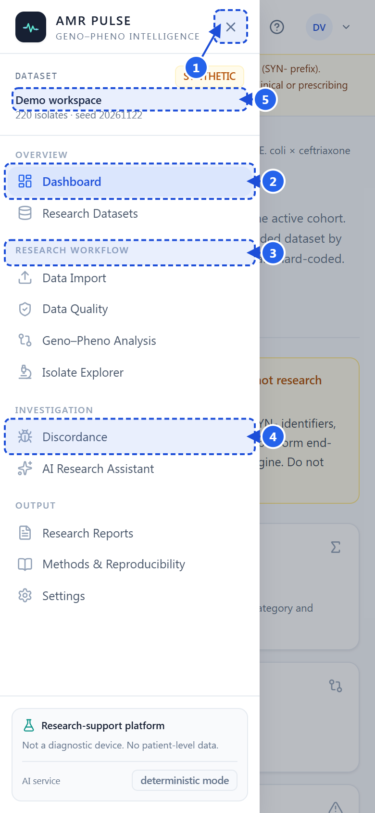
| 1 | Close navigation | Closes the drawer and returns to the page. |
| 2 | Dashboard | The current page is highlighted. |
| 3 | Research workflow | Import → Quality → Analysis → Explorer. |
| 4 | Discordance | The investigation workbench. |
| 5 | Dataset card | Active dataset and seed, with the SYNTHETIC chip. |
If you remember one page from this manual, make it this one. Every number on every screen flows from these definitions.
The unit is a matched isolate–antibiotic pair, not a patient and not a row. One isolate can contribute several pairs (one per drug), and repeated AST rows for the same pair are collapsed only where their categories agree. Conflicting duplicates are excluded and recorded. This is why 147 pairs come from 176 matched pairs, and why the pair table can show 156 rows (eligible + indeterminate + excluded).
| Class | Rule | In binary denominator? |
|---|---|---|
| Concordant resistant | Submitted R AND a curated determinant was detected. | Included |
| Concordant susceptible | Submitted S AND no curated determinant detected, with documented screening provenance. | Included |
| Gene positive / phenotype susceptible | Submitted S AND a curated determinant was detected. Candidate discordance. | Included |
| Phenotype resistant / no known determinant | Submitted R AND no curated determinant detected. Candidate discordance. | Included |
| Indeterminate | I / SDD / NS categories, unresolved variants, or a record that fails a required inclusion rule. | Excluded |
| Quantity | Value | What it means |
|---|---|---|
| Matched pairs | 176 | Exact isolate/BioSample joins for E. coli × ceftriaxone. |
| Eligible pairs | 147 | Passed organism, screening-provenance, category and mapping rules. |
| Agreement | 104/147 = 70.7% | Concordant R (34) + concordant S (70). |
| 95% Wilson CI | 62.9–77.5% | Uncertainty of the proportion in this synthetic cohort. |
| Determinant-positive PPV | 34/39 = 87.2% | 34 concordant R among 39 determinant-positive pairs. CI 73.3–94.4%. Not a clinical predictive value. |
| Candidate discordance | 43 | 5 gene+/S plus 38 R/no determinant. Review prompts. |
| Indeterminate | 9 | Held outside the binary comparison. |
| Excluded | 29 pairs; 33 AST rows | Each exclusion has a recorded reason, never a silent drop. |
| All-strata sensitivity view | 978 pairs; 921/978 | Pooled across strata; reported separately, never as the primary result. |
NEXT_PUBLIC_.Why is AI “off”? No provider key is configured in the public demo. Answers are assembled deterministically from validated tool outputs; every number still comes from the engine. This is a supported mode.
Why are there 938 issues if the data is clean? The demo deliberately includes realistic gaps (numeric measurement missing 45.2%, non-standard BioSample accessions). The audit records them instead of fixing them; only 17 are critical and they block the affected pair, not the dataset.
Why 70.7% and not “accuracy”? Agreement is the proportion of eligible pairs where the submitted category and the curated determinant status match. Accuracy would require an independent gold standard and a validated assay; this is a synthetic cohort.
Can I upload my own data? Yes, in a private environment and only with non-identifiable isolate-level data that you are authorised to use. Check mapping, quality and exclusions first.
Where did my saved report go? Reports, notes and review decisions are browser-local. Export them before clearing browser data or switching machines.
Print / PDF produced an empty page. Wait for the preview to finish rendering, then print with “Background graphics” enabled.
The analysis button does nothing. Check that all required files are mapped (“required mapped”) and that you are not rate-limited.
| Symptom | Likely cause | Action |
|---|---|---|
| “Review mappings” stays disabled | One or more required files not loaded | Load all four CSVs; check the slot labels. |
| Validation badge not green | A required field has no source column | Set the missing selector; confirm no duplicate mapping. |
| Zero eligible pairs | Wrong organism/antibiotic combination | Run “Default” or pick a stratum present in the dataset. |
| Excluded rows dominate | Missing screening provenance or unmatched identifiers | Read the exclusions register and fix the source table, not the result. |
| AI answer unavailable | Provider unset or rate limit | Use deterministic mode; wait for the hour window. |
| PDF export empty | Print dialog timing | Re-open print after preview renders; enable background graphics. |
Uzair Ahmad
Final-year Pharm.D student, FUUAST (CGPA 3.7)
Brand Management Diploma, IBA Karachi (2023–2024)
Built for the Qoder · CEGA Buildathon 2026.
Email: ua6546830@gmail.com
LinkedIn: linkedin.com/in/uzairahmad02
Instagram: @dr.uzair.m.ahmad
Phone: +92 347 8043689